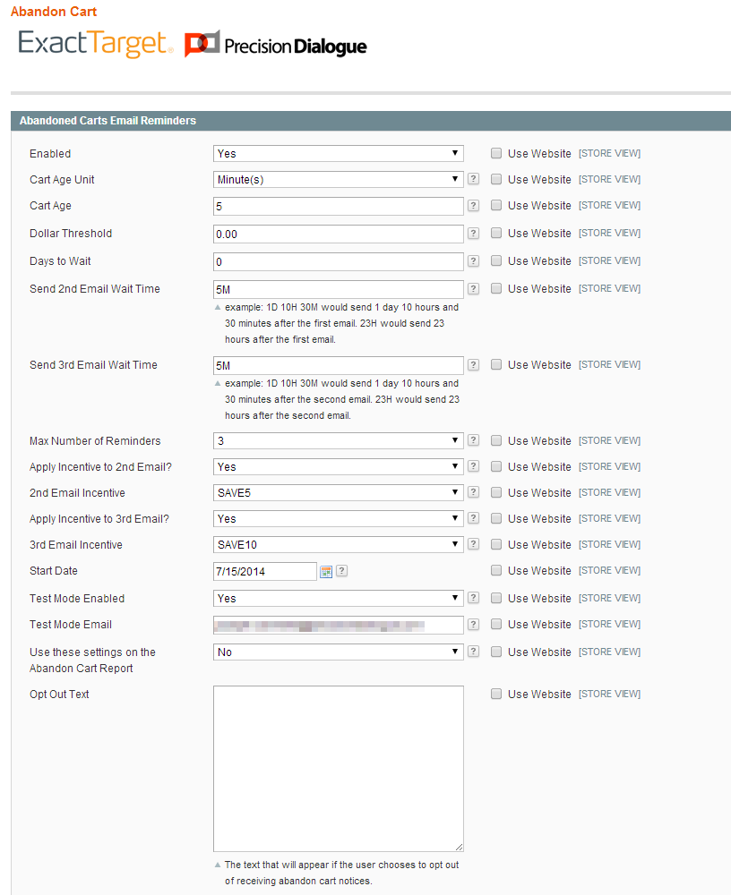
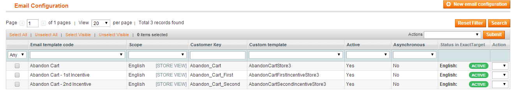
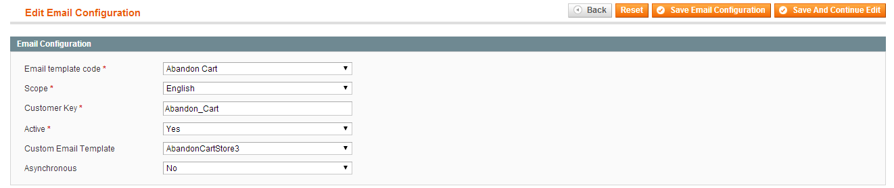

ExactTarget Connect by PrecisionDialogue Abandon Cart Configuration
Details for configuring and customizing abandon cart emails for the ExactTarget Connect by PrecisionDialogue Magento module
Welcome the user documentation for configuring abaondon cart functionality in the ExactTarget Connect extension.
These pages will detail the steps required to customize the functionality for abandoned cart reminder emails initiated in Magento and sent via ExactTarget. For a complete reference on customizing the content of the various email templates, including those used by the abandon cart functionality, see the reference ExactTarget Connect Email Customization.
Table Of Contents
- System Overview
- Configuration Settings
- Email Configuration
- Cron Requirements
- Final Steps
System Overview
The ExactTarget Connect by Precision Dialogue extension enables the fulfilment of abandoned cart transactional emails by ExactTarget when triggered by a custom Magento cron task. There are a variety of options that can be set to contol the timing and frequency of the emails as well as a way to provide custom incentives to convert abandoned carts into sales.
Because the abandon cart emails built on top of Magento transactional emails it is also possible to deeply customize the content of the emails. For full details of how to use the various email templating options available though the extension please see the ExactTarget Connect Email Customization documentation.
Configuration Settings
Configuration starts with the editing of the Abandon Cart settings that control the timing and frequency of reminder emails. You access the settings from the ExactTarget -> Configuration -> Abandon Cart screen.

Set the configuration scope for the website/store whose abandon cart email functionality you wish to configure. Do not enable the abandon cart functionality until all the other configuration is complete. Please note that because the abandoned cart reminders require an email address only carts abandoned by registered and logged in customers will receive the notifications.
First specify the Cart Age Unit. This is the unit of time used by the Cart Age value to determine if a shopping cart is abandoned. Set the Cart Age to the appropriate timespan value, after which a cart is considered abandoned. In the example above a cart with no activity after 5 minutes is considered abandoned.
Next, if you would like to only send out abandon cart reminders for carts above a minimum amount set the Dollar Threshold value to the cutoff value. This will be the minimum value, above which an abandon cart email will be sent. If there is no value (or the value is 0) then reminders will be sent for all abandoned carts.
The Days to Wait value is the number of calendar days to wait between sending the reminder emails. In the example above we are not waiting any extra time between sending the first, second and third email reminders.
The Send 2nd Email Wait Time value is the amount of time to wait after sending the first abandoned cart email before sending the second reminder email (if more than one is configured). This time is consecutive with the Days to Wait value. The value can be any number of days, hours and/or minutes after the first reminder email is sent and is formatted as a timespan string. For example a value of 1D 10H 30M will send 1 day, 10 hours and 30 minutes after the previous email.
The Send 3rd Email Wait Time is the amount of time to wait after sending the second abandoned cart email before sending the third reminder email (if more than two are configured). The setting is the same as the Send 2nd Email Wait Time.
The Max Number of Reminders setting determines how many abandon cart notification emails will be sent to the customer. There is a hard limit of three (3) reminders per cart to ensure that customers are not sent too many notifications. Set the value to 1, 2 or 3 depending on how many notifications you wish to send the customer.
The Apply incentive to 2nd Email setting controls if an incentive is included in the second abandoned cart notification email. If it is set to Yes then you can select the incentive coupon to apply to the email. Manage available coupons through Promotions -> Shopping Cart Price Rules and ensure that each rule uses a specific coupon as that is required for the incentive functionality. Note that if you create a new incentive you will need to clear your Magento caches before it is available as a selection.
The Apply incentive to 3rd Email setting is identical to the Apply incentive to 2nd Email setting except it applies to the third notification email (if configured).
The Start Date setting ensures that only carts created after the date are eligible to receive notifications. This will ensure that all carts abandoned before the installation of this extension will not be included in the selection logic.
The Test Mode Enabled and Test Mode Email settings allow you to easily test the abandoned cart notification functionality. If test mode is enabled then all abandoned cart notification emails will be sent to the email address(es) listed in the Test Mode Email instead of the registered customer's email address.
The Use these settings on the Abandon Cart Report setting controls if the above configured settings values are applied to the store specific abandon cart report.
The Opt Out Text setting holds the text content that is sent to the customer if they opt out of receiving abandon cart notifications.
Email Configuration
There are up to three transactional email mappings that support the abandon cart notification functionality. Depending on the Max Number of Reminders setting a customer can receive one to three emails over a given timespan reminding them about their abandoned shopping cart. In order to fulfill the abandon cart notifications with ExactTarget the transactional email mappings must be properly created. To set up the correct template mapping go to the email configuration screen via ExactTarget -> Configuration -> Email. The transactional email templates can be customized, for full details see ExactTarget Connect Email Customization.

The first email that needs to be configured is that for the Abandon Cart email template code. This is the email template that is first sent to a customer who has abandoned a shopping cart. The email is sent at the first cron interval that occurs after the cart has reached the age configured in the Cart Age and Cart Age Unit configuration settings.

If there is more than one reminder configured (via the Max Number of Reminders setting) then a second email configuration is required. This email configuration is for the Abandon Cart - 1st Incentive email template code. This email will be sent at the first cron interval that occurs after the wait time settings for the second email notification have elapsed.
If there are more than two reminders configured (via the Max Number of Reminders setting) then a third email configuration is required. This email configuration is for the Abandon Cart - 2nd Incentive email template code. This email will be sent at the first cron interval that occurs after the wait time settings for the third email notification have elapsed.
The maximum number of abandon cart notifications is three, regardless of the value in the Max Number of Reminders setting.
Cron Requirements
All abandon cart notification functionality is implemented by two Magento cron jobs. These jobs can be scheduled to run at any interval.
The first job, Abandon Cart: Find abandoned Carts is responsible for finding all of the abandoned carts that require a notification to be sent and sending the notification through ExactTarget. Any abandoned carts that meet the eligibility requirements will have the correct transactional email template sent to the customer.
The second job, Abandon Cart: Update Expired Carts is responsible for cleaning up the details of abandoned carts that have expired and will no longer have notifications sent.
Final Steps
Now that all of our configuration is complete, we have set the correct configuration values for sending abandoned cart notification emails and set up the transactional email template mapping, we can start taking advantage of sending and tracking abandoned cart notifications through ExactTarget. Navigate to ExactTarget -> Configuration -> Abandon Cart, select the appropriate configuration scope and set the Enabled value to Yes.
When the abandon cart feature is enabled every time the Abandon Cart: Find abandoned Carts cron job executes customers who have abandoned shopping carts that meet the configured criteria will receive the appropriate notification email send through ExactTarget.
{kind=link}
{kind=link}
{kind=link}